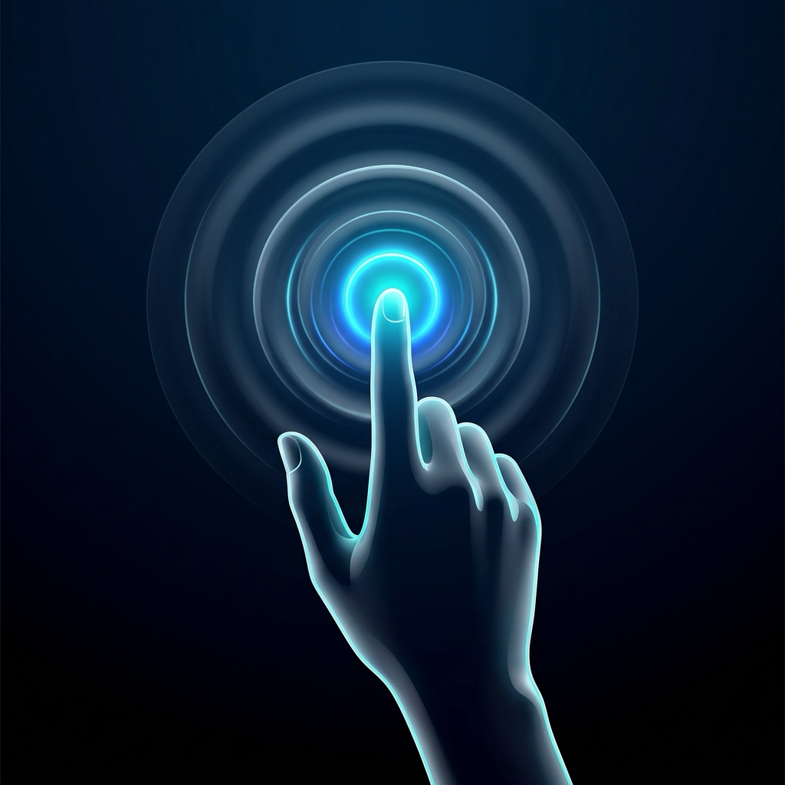

Look. Point. Touch.
Magic in the air.
The invisible trackpad for Mac. Effortlessly glide your cursor, tap to click, drag windows, and slide through Spaces using the camera already built into your Mac.

Designed for Mac.
From the ground up.
Every millisecond counts. AirTouch combines low-level macOS Quartz events with machine learning for an experience that feels instantaneous.
Unlike VR gloves or external sensors, AirTouch works with your MacBook’s built-in FaceTime HD camera or Studio Display. Wave your hand, and you are in control.
When you bring your thumb toward your index finger to click, natural hand tremors usually move the cursor. Anchor Lock freezes your aim in place at the exact millisecond you prepare to click.
Direct C-level event injection via CGEventCreateMouseEvent and the macOS HID event tap. Smooth, 60fps cursor momentum without application-layer lag.
All vision inference runs locally on your device via MediaPipe. No video or telemetry ever leaves your computer or touches a cloud server.
Feels like second nature.
No complex sign language. Just the natural movements you already make.
Point to Glide
Extend your index finger. Exponential smoothing turns your arm into a laser-sharp pointer across displays.
Pinch Tap
Tap your thumb and index together. Instant left-click registration calibrated for precision.
Hold & Drag
Hold the pinch for more than 0.28s to grab windows, move files, or highlight blocks of text.
Thumb + Middle
Pinch your middle finger to your thumb for an instant native macOS secondary click.
Two-Finger Glide
Two fingers up to scroll. Features dynamic momentum and sub-line accumulator for buttery web browsing.
Three-Finger Swipe
Swipe 3 fingers left or right to switch full-screen Desktops. Flick upwards for Mission Control.
Four Fingers Up
Hold 4 fingers steadily for 0.45s to engage brightness control, then raise or lower your hand.
Rock On for Volume
Make the rock sign for 0.35s to engage macOS system volume keys. Raise to turn up, lower to mute.
Thumbs Up Pause
Hold thumbs up for 0.5s to freeze or resume all tracking when you need to type on your keyboard.
Run AirTouch on your Mac.
Clone the repository and launch directly with your Terminal. Setup is fully automated.
git clone https://github.com/Oarabile-Seboka/airtouch.git
cd airtouch
# 2. Run (automatically installs virtualenv & dependencies)
chmod +x run.sh
./run.sh
q to quit in the preview window • Press h to toggle HUD overlay
Technical Specifications
| System Requirements | macOS Monterey 12.0 or later (Recommended: macOS Sonoma or Sequoia). |
| Hardware | Apple Silicon (M1, M2, M3, M4) or Intel Core processor. Minimum 4GB unified RAM. |
| Camera Input | Built-in FaceTime HD camera, Studio Display camera, iPhone Continuity Camera, or any 720p+ USB webcam. |
| Permissions Required |
Camera (for landmark detection) & Accessibility (for Quartz cursor movement & media keys). |
| Performance | Native 60 FPS event dispatch via Quartz Event Tap. Less than 4% CPU consumption on Apple Silicon. |
| Privacy Architecture | 100% on-device vision processing. Zero network transmission. Zero analytics. |